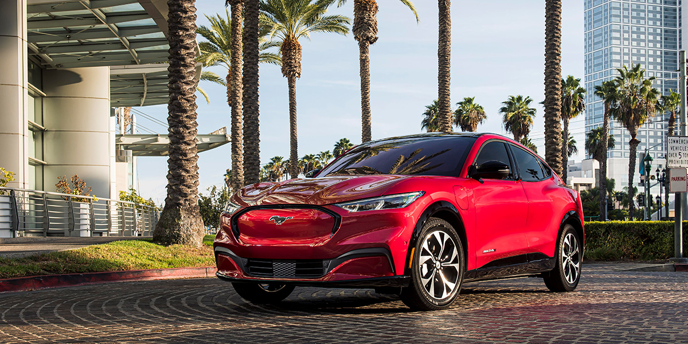

1. Tesla Model 3: El Tesla Model 3 es un vehículo eléctrico compacto que ha revolucionado el mercado con su rendimiento, tecnología avanzada y diseño elegante. Con una gran autonomía y características de conducción autónoma, el Model 3 es líder en la industria de los vehículos eléctricos.
2. Ford Mustang Mach-E: El Ford Mustang Mach-E es un SUV eléctrico que combina el icónico diseño del Mustang con la eficiencia y potencia de un tren motriz eléctrico. Ofrece una experiencia de conducción emocionante y cuenta con tecnología innovadora que lo hace destacar en su segmento.
3. Hyundai Ioniq 5: El Hyundai Ioniq 5 es un crossover eléctrico que ofrece un diseño futurista, una gran autonomía y características de carga rápida. Con un interior espacioso y tecnología de vanguardia, el Ioniq 5 redefine la movilidad eléctrica.
4. Rivian R1T: La Rivian R1T es una camioneta eléctrica que combina un rendimiento todoterreno excepcional con una propulsión totalmente eléctrica. Con capacidades de carga impresionantes y características innovadoras, la R1T está liderando la revolución en el segmento de camionetas eléctricas.
5. Lucid Air: El Lucid Air es un sedán eléctrico de lujo que ofrece un diseño elegante, un rendimiento potente y una gran autonomía. Con un interior lujoso y tecnología de vanguardia, el Air establece un nuevo estándar en la categoría de vehículos eléctricos de alta gama.